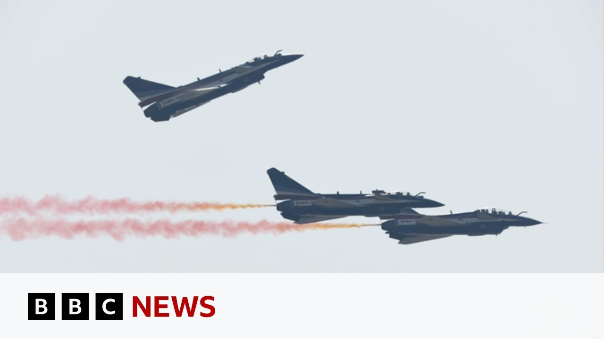

【BBC News 20250709 伊朗是否转向中国寻求先进战斗机？】
Summary: 伊朗正考虑购买中国制造的J10C战斗机以更新其老化的空军装备，同时国际社会关注其核计划及地区安全局势。
摘要： Iran is considering purchasing Chinese-made J10C fighter jets to modernize its aging air force, while the international community focuses on its nuclear program and regional security.

⏱️ Estimated Reading Time: 21 min
📚 四级生词 📚 六级生词 📚 雅思生词 📚 托福生词 📚 专八生词 📚 SAT生词 📚 考研生词 📚 GRE生词 📚 高考生词 📚 其它生词生词
You're gambling with World War II.
你在用第二次世界大战做赌注。
As a military strategic planner, a former planet, you don't want politicians telegraphing what your next moves are going to be.
作为一名军事战略规划者，前星球，你不希望政客们泄露你的下一步行动。
The US will take over the Gaza Strip and we will do a job with it, too.
美国将接管加沙地带，我们也会参与其中。
A peacekeeping force does not exist with a ceasefire.
停火并不意味着维和部队的存在。
Welcome to this week's security brief with me, Regini Vaian, and Mikey K.
欢迎收看本周的安全简报，我是Regini Vaian，还有Mikey K。
Well, it's been two weeks since President Trump announced on Truth Social that there was to be a ceasefire between Israel and Iran after that 12-day conflict.
特朗普总统在Truth Social上宣布以色列和伊朗在12天冲突后停火已经两周了。
Well, days earlier, American bombers targeted three Iranian nuclear sites in what many feared would be an escalation.
几天前，美国轰炸机袭击了伊朗的三个核设施，许多人担心这会升级局势。
But as that ceasefire continues to hold, there are questions about what comes next.
但随着停火持续，人们开始质疑接下来会发生什么。
What's the current state of Iran's nuclear capabilities?
伊朗目前的核能力如何？
And what will those reported talks between Iran and the US actually achieve?
伊朗和美国之间的所谓谈判能取得什么成果？
Well, with me to discuss all of this as ever is our resident analyst, former senior officer and assault helicopter pilot in the British military, Mikey K.
和我一起讨论这些的是我们的常驻分析师、前英国军方高级军官和攻击直升机飞行员Mikey K。
And as always, he will deliver his brief as he would to his generals.
和往常一样，他会像向将军们汇报一样进行简报。
Mikey, uh, we're going to be taking a look later at Iran's nuclear program.
Mikey，我们稍后会讨论伊朗的核计划。
We will.
好的。
Um, but I wanted to start by asking you about some of the other significant developments when it comes to what's been going on with Iran and the military there.
但我想先问问你关于伊朗及其军事方面的其他重要进展。
Yeah.
好的。
Um, Regina, something that's really jumped out at me over the last week or two is what we call the conventional warfare aspect.
Regina，过去一两周让我印象深刻的是我们所说的常规战争方面。
So conventional means ordinary stuff like fighters, ships, tanks.
常规指的是战斗机、舰船、坦克等普通装备。
Um, and the most notable rumblings for me have been concerning the Chinese-made J10C fighter jet and the Iranians.
最引人注目的传闻是关于中国制造的J10C战斗机和伊朗的动向。
um are are basically eyeing this up.
伊朗基本上在考虑购买这款战机。
Let's take a look at what the J10C looks like.
我们来看看J10C长什么样。
This is the Chinese-made J10C.
这是中国制造的J10C。
It's China's Changdu J10C fighter jet, also known as the vigorous dragon.
它是中国的成都J10C战斗机，也被称为“猛龙”。
So, they've given it quite a uh quite an interesting name.
他们给它起了一个很有趣的名字。
It's come to prominence following its use by Pakistan in the recent Kashmir conflict with India.
它在巴基斯坦最近与印度的克什米尔冲突中崭露头角。
And it really it's it's a proven ability now to go toe-to-toe with westernmade highly capable fourth generation fighters.
它已经证明能够与西方制造的高性能第四代战斗机抗衡。
So the J10C is what's called multi-roll.
J10C是多用途战斗机。
So it can carry airto ground missiles, it can carry air-to-air missiles, or it can carry a combination of both.
它可以携带空对地导弹、空对空导弹或两者的组合。
So just to be clear, Iran is eyeing these up, thinking of buying a load.
明确地说，伊朗正在考虑购买一批。
It is um and the specifics are interesting here.
具体细节很有意思。
So let's take a a closer look slide please, of the J10C.
让我们仔细看看J10C的幻灯片。
Um this is obviously a a view from front on of note.
这是它的正面视图。
You've got a fixed refueling probe to the probe to the top left of the picture.
图片左上角有一个固定的加油探头。
You got cannards which are the smaller wings towards the front of the airplane that makes the aircraft highly reu highly maneuverable.
它有鸭翼，即飞机前部的小翼，使其具有高度机动性。
But what's really interesting for me is what's inside that nose cone.
但最让我感兴趣的是机头锥内部的东西。
So this jet has what's called and I'm going to try and get my uh my lips around this active electronically scanned radar.
这款战机配备了所谓的主动电子扫描阵列雷达。
It's called an issa radar.
它被称为AESA雷达。
What that basically means is it's a radar that can um detect and track airto ground targets but at the same time it conduct it can conduct electronic warfare missions.
这意味着它可以探测和跟踪空对地目标，同时执行电子战任务。
Now, this is interesting because what it's doing is it's it's it's combining the capabilities of what usually require multiple platforms to do that into just one aircraft.
这很有趣，因为它将通常需要多个平台的功能整合到了一架飞机上。
So, just to put that into perspective, let's go slide.
为了更直观地理解，我们来看幻灯片。
This is a um UK Typhoon.
这是英国的台风战斗机。
Um this is scheduled to have an upgrade on the ISSA radar, but it doesn't quite have it currently.
它计划升级AESA雷达，但目前还没有。
Whereas if we go and look at next slide please these two aircraft on the right we have the F-22 US made Raptor that's a fifth generation aircraft that's got an ISA radar and on the left there you've got the French Rafal that's that's referred to as a 4.5 um generation aircraft because it doesn't quite have the fifth generation bits on it.
右边的F-22“猛禽”是第五代战机，配备了AESA雷达；左边的法国“阵风”被称为4.5代战机，因为它不具备完整的第五代技术。
Um so you know those two have it.
这两款战机都有AESA雷达。
The Typhoon is yet to receive it, but Iran are now looking at a capability which is equivalent effectively to the radar that those two aircraft that you can see on the screen.
台风尚未配备，但伊朗现在正在考虑的雷达能力与屏幕上这两款战机的雷达相当。
So that's really that's really stood out for me.
这让我印象深刻。
Now why are Iran looking at this?
伊朗为什么考虑这个？
Well, part of Iran's fixed wing air defense capability was historically USDA and procured during the reign of the sha.
伊朗的部分固定翼防空能力历史上来自美国，是在沙阿时期采购的。
So pre979 Islamic uh Islamic State revolution.
即1979年伊斯兰革命之前。
Let's take a look at the Iranian F-14.
我们来看看伊朗的F-14。
Um this is the Tomcat.
这是“雄猫”战斗机。
Now obviously spares and maintenance are going to become an issue here post 1979 the US are not going to have any form of packages with Iran that give them that.
显然，1979年后备件和维护会成为问题，美国不会向伊朗提供任何支持。
So the limitations meant that the shelf life of operating these jets were coming to an end anyway.
这些限制意味着这些战机的使用寿命已经接近尾声。
But if you add to that the degradation of these US-made jets from recent IDF strikes, it's no surprise really that Iran are looking for a new capability.
再加上最近以色列国防军空袭对这些美制战机的破坏，伊朗寻求新能力并不奇怪。
And can I just ask you who has these AESA nosed jets then? Which other countries?
哪些国家拥有配备AESA雷达的战机？
Well, so as you saw from the slide, I don't know if we can go back slide on that, but the French uh Rafale, which we saw on the left of the screen, outside if we can bring that up, and also the F-22 Raptor, you can see on the right there, French made Rafael on the left.
如幻灯片所示，法国的“阵风”和美国的F-22“猛禽”配备了AESA雷达。
They do have these radars.
它们确实有这种雷达。
The UK Typhoon is scheduled to have it, but is yet to receive it just yet.
英国的台风计划配备，但尚未实现。
What's in the mix as well as the J10C for the Iranians, uh, is also the Sue35.
除了J10C，伊朗还可能考虑苏-35。
We can go to a slide.
我们来看幻灯片。
I think we got a picture of that.
我们有它的图片。
Uh, this is Russianmade Sue35 Sukcoy.
这是俄罗斯制造的苏-35“侧卫”。
Um I'm I'm estimating that's going to be in the mix because Iran haven't confirmed or denied that it's purchasing um around 40 of the J10C's, but Iran has already ordered 24 of these jets from Russia a couple of years ago, but they're yet to be operational.
我估计它也在考虑范围内，因为伊朗既未确认也未否认购买约40架J10C，但几年前已从俄罗斯订购24架苏-35，但尚未投入使用。
So if Iran sees that there's some form of delay in in the production of these aircraft, then they might just flick to China for the um the J10C's.
如果伊朗发现这些飞机的生产有延迟，可能会转向中国的J10C。
Okay, so that's the military changes going on.
这就是目前的军事变化。
But of course in the conversation since those strikes there's also been a conversation around the Iranian government.
但空袭后，关于伊朗政府的讨论也很多。
Yeah.
是的。
I think you know we've seen a lot of rhetoric coming out of the US not necessarily from the Trump admin but you know from senators from from US media about regime change and you know this is something I'm really quite passionate about.
我们看到美国很多关于政权更迭的言论，不一定来自特朗普政府，而是来自参议员和媒体。
I spent three tours in Iraq and was personally involved in the assessments of the Afghan National Army in Afghanistan.
我在伊拉克执行过三次任务，并亲自参与评估阿富汗国民军。
And you know what what I learned being in Iraq from 2003 to 2005 and 2006 is any regime attempts that create a security vacuum have been historically catastrophic.
我在2003至2006年在伊拉克的经历告诉我，任何制造安全真空的政权更迭尝试都带来了灾难性后果。
And we've seen that in Iraq.
我们在伊拉克看到了这一点。
Um the US is Paul Brenner.
美国的保罗·布雷默。
He was he was put in as the head of the transition authority just after the invasion Iraq in 2003.
2003年伊拉克入侵后，他被任命为过渡当局负责人。
He effectively fired all of Saddam's army.
他实际上解散了萨达姆的军队。
And what that did was it created a security vacuum that wasn't replaced.
这造成了无法填补的安全真空。
So a security faction being army and police for example that wasn't replaced that allowed al-Qaeda in Iraq to thrive who then morphed into Islamic State in Iraq that then morphed into Islamic State in Iraq and Syria and then ultimately became the Islamic State and then from further experience of of of assessments on the Afghan National Army.
军队和警察等安全力量的缺失让“基地”组织在伊拉克壮大，后来演变为“伊拉克伊斯兰国”，再演变为“伊斯兰国”。
Even with all of the resources, mentoring and equipment capability that was given to the Afghan National Army mostly by the Americans um there is no guarantee that success is going to come from that.
即使美国向阿富汗国民军提供了大量资源、指导和装备，也无法保证成功。
And as we saw in Afghan Afghanistan with the Taliban now power, it speaks for itself.
正如我们在阿富汗看到的，塔利班现在掌权，这说明了问题。
Yeah, it's interesting, isn't it?
这很有趣，不是吗？
Because it's not just about dropping bombs in certain places.
因为这不仅仅是轰炸某些地方。
But let's talk about some of the other targets.
我们来谈谈其他目标。
We're going to get on to the nuclear sites in a minute.
我们稍后会讨论核设施。
Um, but we understand that the Israelis also targeted Evan Prison where the Iranian government had been holding political prisoners.
但以色列还袭击了埃文监狱，伊朗政府在那里关押政治犯。
We long have reported on uh accusations that the Iranian government is trying to stifle any sort of descent.
我们长期报道伊朗政府试图压制异议的指控。
A lot of women have been taken to the streets over the years as well.
多年来，许多女性也走上街头抗议。
Just tell our viewers why Evan prison is so significant.
请告诉观众为什么埃文监狱如此重要。
Uh for me, this was a a massively counterproductive move that came I think on around day 11 of the 12-day conflict.
我认为这是在第12天冲突的第11天发生的非常适得其反的行动。
And the reason why I think it's counterproductive is if we can go slide, we can see some uh battle damage from this this video.
原因在于，如果我们看幻灯片，可以看到这次空袭造成的破坏。
Uh this is video footage of the damage created by the IDF air strikes.
这是以色列国防军空袭造成的破坏视频。
71 prisoners were reportedly killed in the strikes.
据报道，71名囚犯在空袭中丧生。
But these these people inside this building were anti-regime.
但这些人是反政府人士。
They'd been put there because they were dissident and they were anti-regime.
他们因为持不同政见和反政府被关押在那里。
And and it just makes no sense that, you know, if there's an idea of creating regime change from from within, this would totally oppose that.
如果目的是从内部推动政权更迭，这次行动完全适得其反。
Um, and I think, you know, the the the estimates from talking to people who are dissident inside Iran, this this really didn't help their cause.
根据与伊朗国内异议人士的交流，这次行动对他们的目标毫无帮助。
It's all really complex, isn't it?
这一切非常复杂，不是吗？
And of course, one of the things that was talked about um was the US's involvement um which was just over two weeks ago on a Saturday night where those B2 bombers targeted three Iranian nuclear sites.
当然，两周前的周六晚上，美国B2轰炸机袭击了伊朗的三个核设施。
Um before we go into the fallout from that, just remind us of those three sites.
在讨论后果之前，请回顾一下这三个地点。
Yeah, I think it's good.
好的。
It's it's been it's been a couple of weeks now, but if we can go slide, we can just take a look at a quick quick map.
已经过去几周了，我们来看一张简图。
Um towards the top top of that slide you've got Tran the capital and then the three main sites are almost directly south.
幻灯片顶部是首都德黑兰，三个主要地点几乎正南方向。
So you've got Fordo just below Tran.
首先是德黑兰下方的福尔多。
This was the main target uh of the US.
这是美国的主要目标。
Uh it's an enrichment facility uh that had over 2,000 centrifu centrifuges deep underground.
这是一个浓缩设施，地下有2000多台离心机。
It had surfaceto-air missile systems around it.
周围有防空导弹系统。
So the Iranians obviously wanted to protect it.
伊朗显然想保护它。
Most of the bunker busters the GBU57s which I'll talk about in a second were placed on Fordo.
大多数GBU-57“地堡炸弹”被投放在福尔多。
Natans was also a target of the B2s but not to the extent of Fordaux and then you've got Isvahan just below that uh which is the the nuclear research center uh and that was hit by Tomahawk land attack missiles.
纳坦兹也是B2的目标，但规模不及福尔多；再往下是伊斯法罕核研究中心，它被“战斧”导弹击中。
But if we can go slide we can take a closer look on the Ford facility.
但如果我们切换到幻灯片，我们可以更仔细地观察福尔多设施。
This is what they call battle damage assessments BDAS um the main target of the B2s and the GBU57s that massive ordinance penetrator or mop as they were talking.
这就是他们所说的战斗损伤评估（BDAS），嗯，B2轰炸机和GBU57巨型钻地弹（MOP）的主要目标。
Um, and you can basically see to the the white building on the right.
嗯，你基本上可以看到右边的白色建筑。
If you go to the left of that shot, you can see there we go.
如果你看向画面的左侧，可以看到那里。
You can see three uh craters uh in the top bit of the shot.
你可以看到画面顶部有三个弹坑。
And then that's the grouping just below that was on the on the left hand slide.
然后下方的那一组就是左侧幻灯片上的内容。
Now, you're not seeing massive craters.
现在，你看到的并不是巨大的弹坑。
The GBU57 has a 13,600 kilometer uh uh bomb, sorry, kilogram head on it.
GBU57的弹头重达13,600公斤。
That's 30,000 pounds.
相当于3万磅。
That's a huge bomb, but it doesn't explode on the surface.
这是一枚巨型炸弹，但它不会在地表爆炸。
It goes deep into the the ground the train about 200 f feet.
它会深入地下约200英尺。
So most of the most of the explosions would have uh occurred under that as I said mostly on Fordo.
所以大部分爆炸发生在地下，正如我所说，主要在福尔多。
Uh and then you have um Isvahan that was attacked by uh sea-based US warships carrying what's called the TAM the t the tomahawk lander track missile that travels subsonic but it can go really low so it's it's really hard to detect by radar.
嗯，然后是伊斯法罕，它遭到美国海基战舰的袭击，使用的是“战斧”陆攻导弹（TAM），这种导弹以亚音速飞行，但可以飞得非常低，因此雷达很难探测到。
Mikey, I was in Washington the night that President Trump came out with some of his top team to announce that the US had targeted those sites in Iran.
米基，特朗普总统当晚在华盛顿与他的高层团队一起宣布美国瞄准了伊朗的这些地点。
And in that short address that he delivered to the nation, he claimed that those sites had been obliterated.
在那次简短的全国讲话中，他声称这些地点已被彻底摧毁。
He said that Iran's nuclear capabilities had effectively been taken out for a long time.
他说伊朗的核能力已被有效削弱很长时间。
Since then, we've heard different views on that and the length of which they have been decimated for.
自那以后，我们听到了关于此事的各种不同观点，以及它们被削弱的时间长度。
What do we know at the moment now?
我们现在知道什么？
Well, let's just go back to I I I watched on set um Trump's um press conference with the Joint Chiefs, General Dan Kaine.
好吧，让我们回到我在现场观看的特朗普与参谋长联席会议主席丹·凯恩将军的新闻发布会。
Trump mentioned the word obliterated.
特朗普提到了“彻底摧毁”这个词。
That's not a term we use in military parliament.
这不是我们在军事议会中使用的术语。
It's way more nuanced than that.
实际情况要微妙得多。
It's about destroying, degrading, deterring.
这涉及破坏、削弱和威慑。
But when the when the Joint Chiefs came out, his assessment um was way more nuanced um but didn't quite align to obliterated.
但当参谋长联席会议出来时，他的评估要微妙得多，但并不完全符合“彻底摧毁”的说法。
Then came that intelligence leak.
然后是那次情报泄露。
Um, and the headlines from that leak were that the centrifuges were mainly intact, over 2,000 of them in Fordo.
嗯，泄露的头条新闻是离心机基本完好，福尔多有2000多台。
They're used to enrich um, uranium.
它们用于浓缩铀。
60% was what the IA said back in May.
国际原子能机构在5月份表示浓缩度为60%。
90% is the key metric.
90%是关键指标。
Um, but also there was that um 400 kg of 60% enriched uh, uranium 235 that the IAEA came out with in May to report and the Intel leak effectively said that that had been moved.
嗯，还有国际原子能机构在5月份报告的400公斤60%浓缩铀235，情报泄露实际上称这些铀已被转移。
the assessment of Iran's program had been according to the intelligence leak put back by a matter of uh months but the White House responding um the White House spoke saying that the top secret assessments were quote flatout wrong.
根据情报泄露，伊朗核计划的评估被推迟了几个月，但白宫回应称这些绝密评估“完全错误”。
However, we then saw Rafal Grcy who's the head of the IAEA the International Atomic Agency and he has since said that the US strikes uh on the three facilities we've just seen had caused severe but not total quote unquote not total damage.
然而，我们随后看到国际原子能机构总干事拉斐尔·格罗西表示，美国对这三个设施的袭击造成了严重但并非完全的破坏。
So contradicting Trump's obliterated comment and also saying that Iran could start enriching again in roughly months.
这与特朗普的“彻底摧毁”说法相矛盾，并称伊朗可能在大约几个月内重新开始浓缩铀。